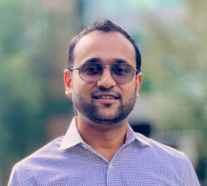

|
Modeling Traffic Systems Using Data-Driven Dynamical Systems Perspective
Speaker
Shakib Mustavee
Affiliation
PhD Candidate
Department of Civil, Environmental and Construction Engineering
University of Central Florida
Co-speaker
Shaurya Agarwal
Affiliation
Assistant Professor
Department of Civil, Environmental and Construction Engineering
University of Central Florida
Abstract
Traffic is a human-engineered system that shows a wide range of characteristics. There are primarily two types of traffic systems- highways and urban arterials. Traffic behavior in highways and urban arterials is primarily stochastic because it depends on various random factors such as human-driver interactions, weather, road condition, road design, etc. Although it is observed that variables of traffic systems, i.e., speed, flow, density, queue length, travel time, etc., exhibit some periodic and chaotic patterns, there is no single underlying governing law that can explain all the phenomena observed in urban arterials and highways. Besides, traffic systems modeling involves multiscale modeling, meaning there are microscopic, macroscopic, and mesoscopic versions of traffic models. Therefore, modeling traffic systems is a challenging task. In recent years, data-driven techniques such as machine learning and deep learning have gained huge popularity in traffic system modeling due to the increase in computation power and data availability. Deep learning models are considered state-of-the-art because they succeed in a wide range of traffic phenomena prediction. But there are a few shortcomings of this approach. For example, deep learning models are not often explicable and generalizable. Hence, the blind application of deep learning is not encouraged in traffic management. To encounter the challenges, data-driven dynamical systems theory is emerging as a useful means because the approach provides a mathematical structure to the system without requiring explicit assumptions. In this presentation, we will explore a few dynamical systems aspects of traffic systems modeling.
Bio
|
|
Shakib Mustavee is a Ph.D. candidate in the Civil, Environmental, and Construction Engineering Department at the University of Central Florida (UCF). He completed his bachelor’s in Electrical and Electronic Engineering from Bangladesh University of Engineering and Technology in 2017 and a master’s in Civil Engineering from UCF in 2021. His research interests include data-driven modeling of real-world complex systems.
|
|
 |
Dr. Shaurya Agarwal is currently (2018-present) an Assistant Professor in the Civil, Environmental, and Construction Engineering Department at the University of Central Florida. He is the founding director of Urban Intelligence and Smart City (URBANITY) Lab and a key member of the Future City Initiative at UCF. He was previously (2016-18) an Assistant Professor in Electrical and Computer Engineering Department at the California State University, Los Angeles. He completed his post-doctoral research at New York University (2016) and Ph.D. in Electrical Engineering from University of Nevada, Las Vegas (2015). His B.Tech. degree is in Electronics and Communication Engineering from Indian Institute of Technology (IIT), Guwahati. His research focuses on interdisciplinary areas of cyber-physical systems, smart and connected transportation, and connected and autonomous vehicles. Passionate about cross-disciplinary research, he integrates control theory, information science, data-driven techniques, and mathematical modeling in his work. He has published 1 book, over 23 peer-reviewed publications, and multiple conference papers on multi-disciplinary. His work has been funded by several private and government agencies. He is a senior member of IEEE and serves as an associate editor of IEEE Transactions on Intelligent Transportation Systems.
|
|